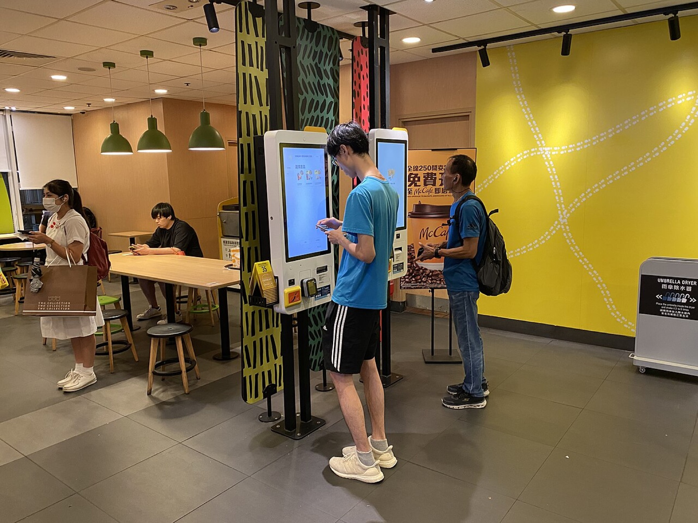
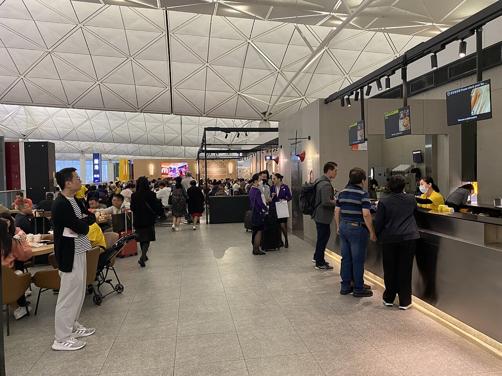
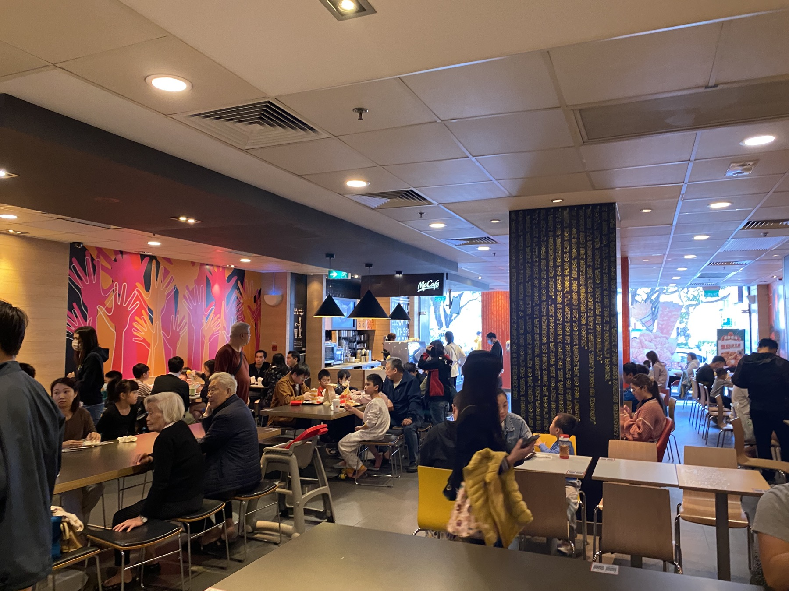
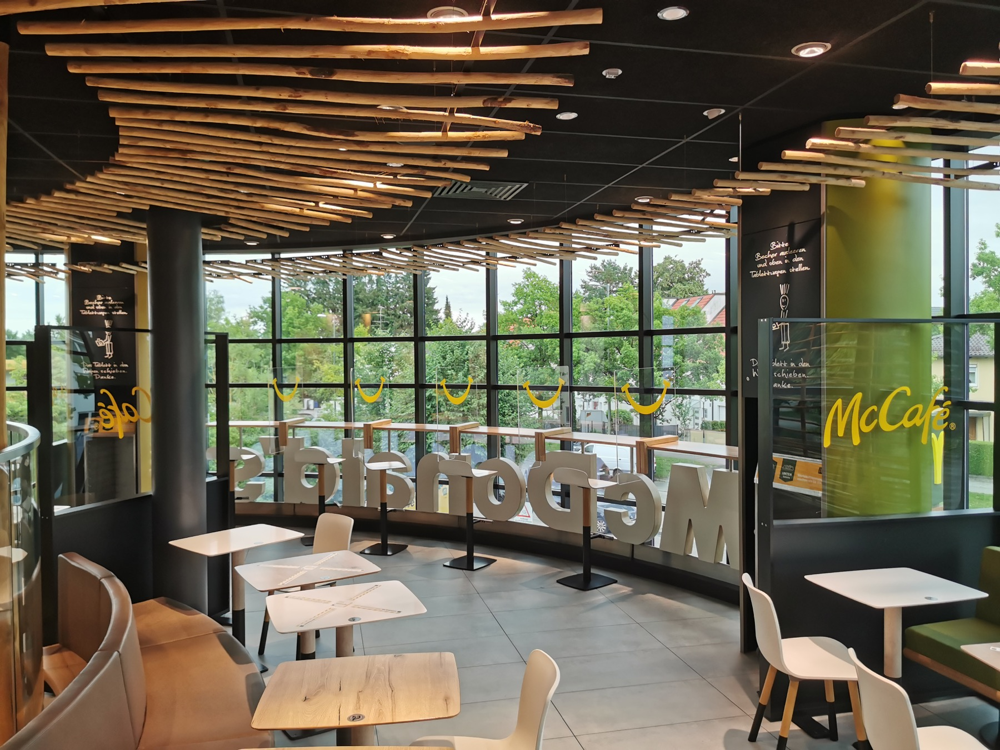
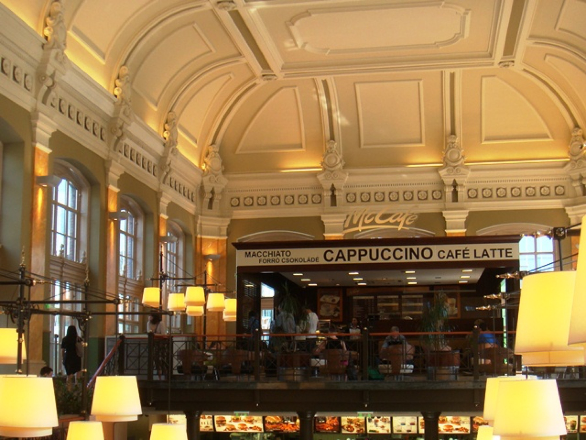

I used to love telling this story: why do you want to leave a McDonald's after 40 minutes? I had the answer down cold — the backrest is bent to a near-right angle, the hard plastic numbs your ass, the red and yellow crank up your anxiety. One neat package, all by design. I posted it on Xiaohongshu and a few other platforms, and it always did well. Every time, the comments would light up: “No wonder I can never sit still!”
And honestly, I felt pretty clever about it. Like I’d seen through something.
Then one day I was flipping through store photos I’d hoarded on my phone, picking a few for a collage. By the second photo my face was a little hot — same store, same shot, and there were both ass-numbing hard plastic stools AND padded, comfortable booths; quick-eat high tables AND four-tops where a family was sitting down to a meal. I stared at the screen for a good few seconds. If McDonald’s really ran some global “make-them-leave” directive, why would the same store contradict itself — why put two completely opposite signals in one room?
That’s when it hit me: my viral story wasn’t really about design. It was about finding a dramatic scapegoat for a familiar discomfort.
Stop asking “is this chair trying to kick me out.” Ask instead: the moment this store opens, how many different kinds of people does it have to serve at once — and how long does each of them want to stay?
First, the unglamorous truth: what photos can and can’t prove
My photos come from a few stores in Hong Kong, Macau, Munich, and Budapest. They prove a lot less than you’d think — there is no single global McDonald’s chair. What they can’t prove: the official design intent behind any one chair, and you definitely can’t reverse-engineer a store’s table-turnover rate by squinting at a photo.
So I did something a little embarrassing — I went back and stripped every scary-sounding number out of the original draft. “Backrest angled to a precise 95 degrees.” “Human body becomes uncomfortable after 20 to 30 minutes.” “Red raises your heart rate.” “Turnover up 30% as a result.” Sounds real professional, right? Full of research-y flavor. But corner me with “where’s the data, what’s the sample size, which store did you measure” — and I’ve got nothing. Truth is, it was either made up, or copied from someone else, who probably made it up too. The moment design analysis leans on fake precision, the louder the claim, the emptier the foundation. I’ve fallen into that hole myself, and traded it for clicks. Looking back, it’s pretty embarrassing.


Do the math, and the “kicking you out” story stops making sense
Full disclosure: I don’t have measured turnover data for these stores. The math below is a back-of-napkin estimate I use to think the logic through — not a measurement. But follow it once and you’ll see where the “they want you gone” conspiracy falls apart.
Picture a McDonald’s on the ground floor of an office building or at an airport. The hours that actually make money are probably the two around lunch. Revenue per square meter per hour during those two hours basically decides whether the store lives or dies. Now sit in the owner’s chair: do you want 100 people coming in, each hogging a sofa seat for a full hour? Or 300 people cycling through, each done in 20 minutes and clearing out? You don’t need me to tell you which. Profitable stores run this math. It has zero to do with whether they like you or want to push you out.
The trouble is, the people walking in aren’t just the lunch crowd. Mornings bring the uncle with a coffee and a newspaper. Afternoons bring students doing homework. Weekends bring families of three. What single chair serves all of them? None. So the mix of “hard stool + soft booth + high table + banquette” is really a shift schedule — using seat combinations to sort different time-blocks and different intents into different zones.
Seen this way, “the hard plastic wants your ass to hurt” both oversimplifies McDonald’s and flatters yourself — as if the whole world revolved around your butt. Hard surfaces are worse for slouching than thick padding, sure. But think about what they live through: wiped dozens of times a day, splashed with cola, smeared with ketchup, shoved around to clear cleaning paths. In that environment, easy-to-wipe, indestructible, cheap-to-replace is exactly why they got picked. That hard chair isn’t about your ass. The truth is, it serves the employee wiping tables dozens of times a day, the manager counting costs at month-end, the procurement guy who needs to swap a broken one by tomorrow. You feel chased off; they’re just running a math problem that has nothing to do with you.
One fast-food chair is actually speaking for four parties
- Customer
- I finished in 10 minutes — can I find a seat right now? I brought my kid — is there a spot where we can sit together?
- Staff
- During rush hour can I wipe a table in three seconds? Does the chair block my cleaning cart?
- Operations
- How many turns per square meter per hour makes sense? Will dine-in and takeout collide at the counter?
- Brand
- In any city, any floor plan, the moment a customer pushes the door open, do they still recognize this as McDonald’s?
Same “go with hard chairs” decision means: for the customer, sit less; for staff, easy to wipe; for operations, high turnover; for brand, consistent recognizability. Four demands squeezed into one chair. Stop looking for the “person trying to kick you out.” This chair is what a pile of constraints looks like once they’ve grown together.
Stop staring at one chair. Look at the combination.
A single chair can only express one posture. A set of seats expresses what kind of business this store means to run.
A row of high tables by the window — small footprint, one person can stand and eat, turns fast. Four-tops in the middle — for families and friends, higher spend, longer stays. Continuous booths — stable, hard to drag away, and they leave a corner for people who want to sit longer without being chased off. Seats near the entrance turn over fastest; the corner in the back allows the most conversation. This isn’t random — it’s a density strategy.


That’s also why the “McDonald’s wants fast, Starbucks wants slow” binary breaks after two uses. An airport Starbucks can’t wait for you to grab and go; a neighborhood McDonald’s ends up hosting old folks on a stroll and kids after school. The brand sets the direction; the specific scene makes the call.
And there’s a variable almost nobody mentions: time. Breakfast, lunch rush, after school, late night — the same set of furniture serves completely different people across a day. That two-top in the morning might be one person’s makeshift desk with a laptop open; by lunch rush, that same one-person-two-seats becomes a capacity bottleneck. Go shoot a photo when the store’s empty and you capture “configuration,” not “use.” If you want to read it, come back at a different hour and watch which seats fill first, how the staff reshuffles the room.
So “how long you sit” can’t be pinned on the backrest alone. Outlets, Wi-Fi, which way the AC blows, noise, who you came with, how long the line is, whether you’re rushing to the next thing — all of it is working together. The chair is one node in that system. As for that “countdown timer hidden in the furniture” — sorry, it doesn’t exist.
The Budapest store showed me space can be a “destination”

The interesting thing about chain brands is never how perfectly they replicate. What’s actually impressive is how cleanly they split the world in two: what has to be globally identical — the menu, the service flow, that one-glance recognizable logo — and what’s allowed to bend with place — the seats, the materials, how long you’re allowed to stay. Airport stores: in and out. Old-building stores: worth making a trip just to photograph. A good system isn’t one where every node looks the same — it’s one where, after it changes, you still recognize it.
I moved this logic into digital products
People who build digital products have a deep-rooted bad habit: treating “time spent” as a self-evidently good metric, opening every meeting with “how do we get users to stay longer.” Fine for content platforms — they literally monetize how long you scroll. But when productivity tools start competing on the same thing, I genuinely want to swear. A productivity tool’s job is to help people finish and leave, and leave saying something nice about you. Are those two the same? Bending a “get it done” tool into a “make them linger” metric — how is that not brain damage?
What seat combinations taught me: stop designing some bland middle-ground dwell time for an “average user” who doesn’t exist. Give the person in a hurry a shortest path. Give the person comparing options a stable workbench. Give the person who logs in once a month a clear exit. Metrics should follow the task — completion time, error rate, whether they come back, how deep they explored — none of which can be mashed into one muddy “engagement” number.
One more for my fellow designers: next time you’re about to say “improve efficiency,” stop and ask — whose efficiency? The customer finding a seat faster? The staff clearing a table faster? The store turning tables faster? Those three sometimes pull together, sometimes fight each other. Break “efficiency” into “who, doing what,” and your design conversation stops getting hijacked by a pretty, empty word.
Next time you push open the door of any chain store, ask yourself three questions
- Sort by task first: solo eaters, two people chatting, a whole family, takeout, queueing — where is each kind of person placed?
- Then look at the ratio: which seat type is most common, which is scarce? Ratios are way more honest than whether a single chair is hard or soft.
- Finally, hunt for counterexamples: if you’re sure it’s trying to kick you out, how do you explain the booths, outlets, and corners that invite you to stay?
- This piece is a visual and systemic analysis based on Joey’s store photos from several cities. It does not present seat angle, dwell time, or turnover rate as measured causal facts.
- Store photos are used to compare visible seat types, layout, and flow; confirming specific design intent still requires brand or design-team documentation.